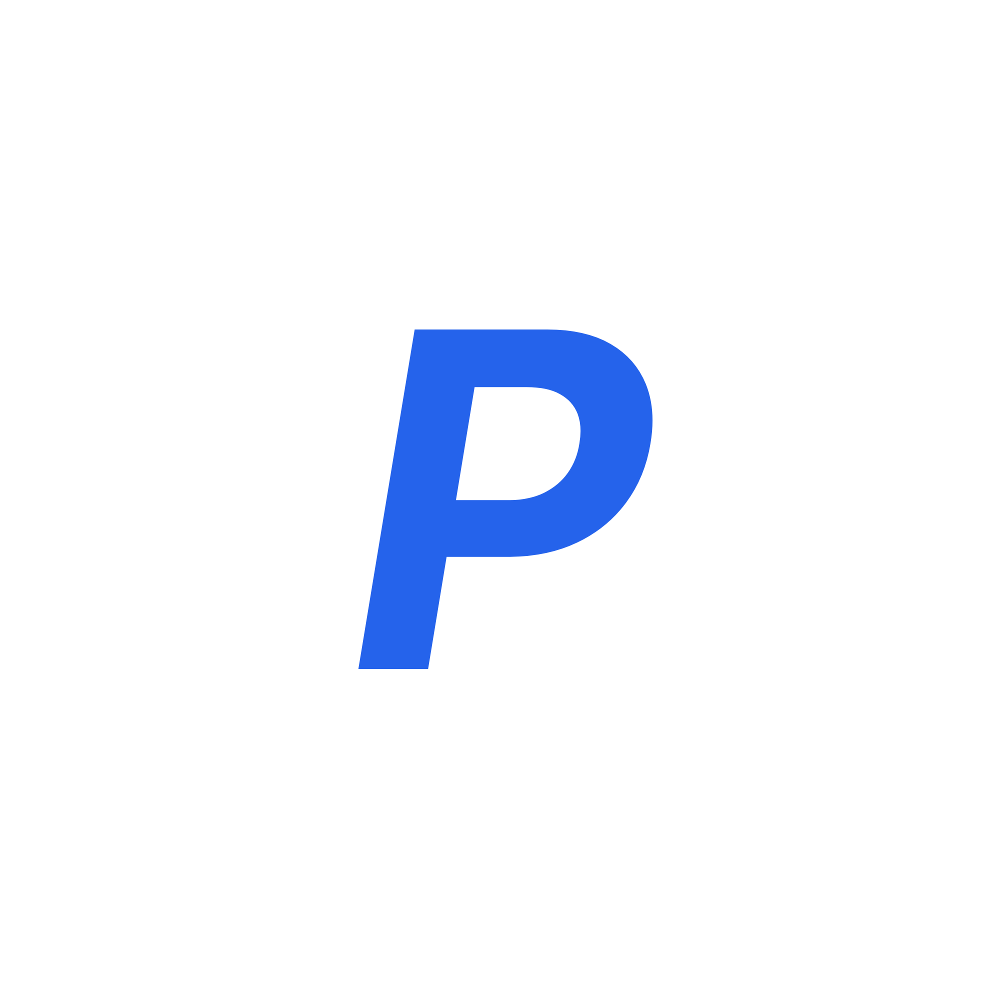
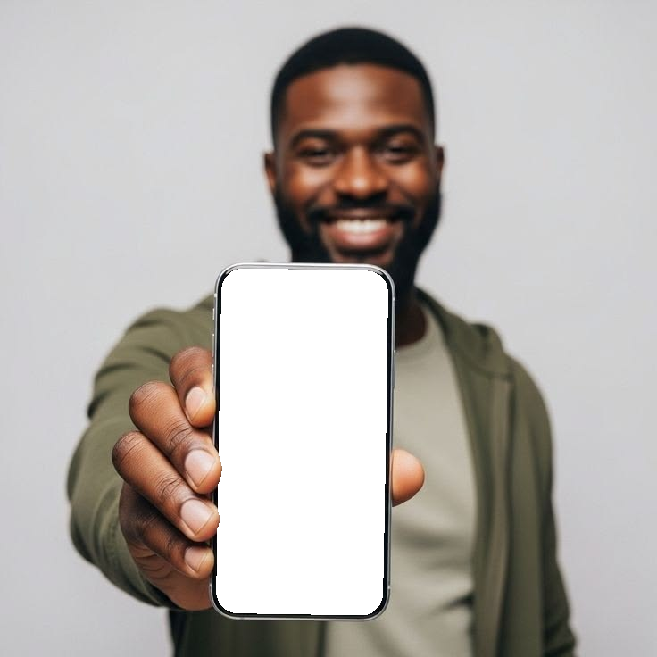

Le pressing, avant…
et avec PressLink.
Gratuit pour les clients, simple pour les pressings. Faites glisser pour voir la différence.

« C'est prêt ? »

Les clients appellent dix fois par jour pour savoir si c'est prêt.
Avec PressLink, le client suit sa commande en temps réel et reçoit une notification dès qu'elle est prête.
Le ticket perdu


Le ticket papier se perd, se déchire, et le retrait tourne à la dispute.
Avec PressLink, le reçu est dans l'application du client : impossible de le perdre.
La caisse du soir
Total 48 500
Le soir, la caisse ne tombe pas juste et personne ne sait pourquoi.
Avec PressLink, les dépenses du jour sont notées et déduites : ce qui doit être dans la caisse est calculé, l'écart aussi.
Qui a fait quoi ?
Un vêtement rendu sans être payé, et personne ne se souvient.
Avec PressLink, chaque rôle a ses accès, chaque action est inscrite au journal, et une commande n'est remise que soldée.
Pour les clients
- Suivi de la commande en temps réel
- Notification dès que c'est prêt
- Reçus et historique dans le téléphone
- Tarifs, horaires et contact du pressing
- Gratuit, sans store
Pour les pressings
- Dépôt en quelques secondes, avec reçu
- Paiements : payé, acompte ou au retrait
- Caisse : dépenses, clôture et écart
- Équipe, rôles et journal d'activité
- Plusieurs pressings, exports
Le vrai parcours, en vidéo
Installer, c'est 3 gestes
Scannez le code
Ou ouvrez presslink.org/app dans Chrome ou Safari.
Ajoutez à l'écran d'accueil
Android : « Installer ». iPhone : Partager, puis « Sur l'écran d'accueil ».
Rejoignez votre pressing
Avec son code, par exemple PE-4821.
presslink.org/app
Fini le stress au pressing.
L'équipe PressLink vous répond par appel ou sur WhatsApp au 07 18 00 22 93. Démonstration et mise en place offertes.